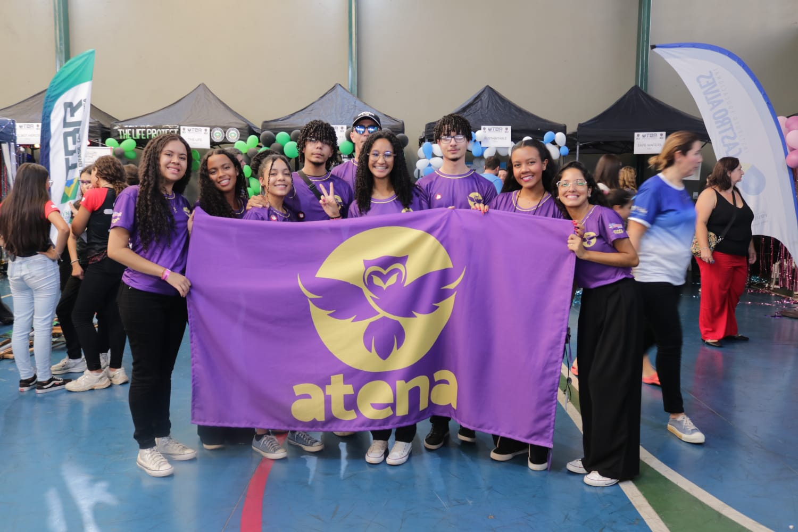
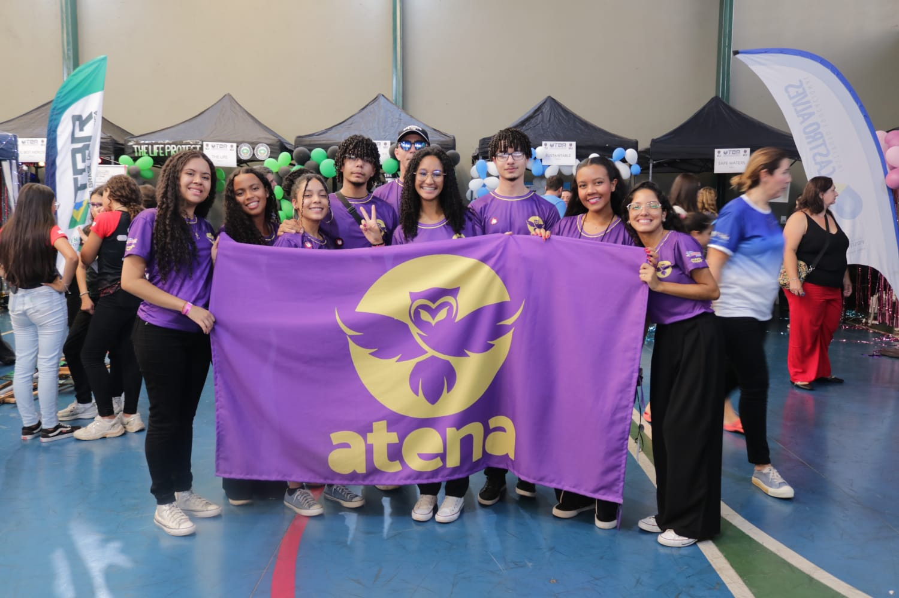

Eventos
FEMIC
09/11/2024
A Feira Mineira de Iniciação Científica (a FEMIC) é um movimento de promoção e divulgação científica que incentiva a criatividade, a inovação e o protagonismo em estudantes e professores, através de ações diversas de ensino, pesquisa e extensão. No dia 11 de novembro de 2024 a Equipe Atena marcou presença na FEMIC, onde apresentamos nosso projeto, Reflorestamento em Manancias. Foi uma experiência enriquecedora dividir nossa paixão pela tecnologia e ciência com outros talentos incríveis! Tivemos a oportunidade de aprender, inspirar e ser inspirados por projetos que mostram o futuro da inovação.
FEBRACE
16/10/2024
Serve como porta para a ciência e a inovação. Sendo assin, se trata de um evento de grande importância para estudantes e educadores brasileiros que se interessam por ciência e tecnologia.
Essa feira tem como objetivo principal estimular a curiosidade científica, a criatividade e o espírito inovador em jovens de todo o país.
A inscrição já foi feita pela equipe e um anexo do nosso projeto já foi enviado.
Estamos aguardando resultados.
ONG Inclusão sem fronteiras
09/10/2024
A ONG Inclusão Sem Fronteiras é uma associação dedicada e comprometida com a promoção da inclusão social e educacional de crianças com e sem deficiência. No dia 22/10/2024, levamos nossa pesquisa até ONG "Inclusão sem fronteiras". O nosso principal intuito com essa visita, além da divulgação do projeto, foi conscientizar as crianças beneficiadas pela ONG para que as mesmas cresçam conhecendo os impactos da ação humana sobre a natureza e saibam do nosso dever como cidadãos, de atuar para a mitigação dos malefício causados pelo homem. Nessa visita tivemos a oportunidade de ter uma conversa descontraída com as crianças enquanto ensinavamos as mesmas sobre o processo de montagem do nosso produto, as Bombas de Semente. Todas as crianças tiveram um ótimo desempenho no processo de produção das Bombas, e assim, ficou claro mais uma vez como nosso produto é algo fácil e pode ser desenvolvido por pessoas de qualquer idade.
SIA
30/10/2024
A inscrição já foi feita pela equipe e um anexo do nosso projeto já foi enviado.
Estamos aguardando resultados.
TBR
2023 e 2024
Tbr - Torneio Brasil de Robótica é uma iniciativa que visa estimular o desenvolvimento de ideias baseadas nos ODS que, por meio de uma prova prática, uma simulação do “ODS tema” é feita para que a conscientização e “exemplificação” sejam feitas no evento. Além disso, as equipes devem desenvolver trabalhos científicos, onde um projeto(ideia) é desenvolvido e divulgado ao longo do ano para ser apresentado neste mesmo torneio.
 

E.E Dr.A.A.S.Canedo
27/11/2024
No dia 27 de novembro, a equipe Atena teve a oportunidade de compartilhar
com os alunos da Escola Estadual Doutor Antônio Augusto Soares Canedo o
nosso projeto: reflorestamento em mananciais através de bombas de Semente.
Com a produção das bombas de sementes, os alunos puderam literalmente "plantar"
o futuro do nosso planeta de maneira divertida e engajante.
A busca bomba de semente é uma maneira eficiente de promover o reflorestamento,
permitindo que as sementes germinem e se tornem novas árvores, trazendo vida e
equilíbrio para o ecossistema. O mais incrível foi ver o entusiasmo das crianças
ao aprender como sua ação poderia, de fato, contribuir para a preservação do meio
ambiente. Elas ficaram empolgadas ao entender que algo tão simples, como jogar
essas bombas de sementes, pode gerar grandes impactos e melhorar a qualidade do
ar e da água.
O projeto Reflorestamento em mananciais Através de Bomba de Semente mostra que,
com criatividade e ação, podemos transformar o presente e plantar as sementes
para um futuro mais equilibrado.